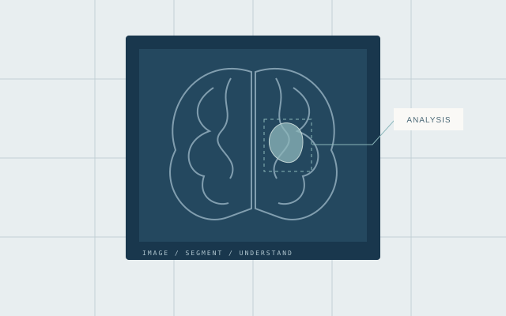

[Your degree]
[University name] · [Country]
[Relevant coursework, thesis topic, or academic distinction.]
ACADEMIC PORTFOLIO PERU
[Your degree or current role], interested in medical imaging, artificial intelligence, and meaningful applications in healthcare.
[Introduce yourself in 2–3 sentences: what you study, the questions that motivate you, and how your work connects to Medical Imaging and Applications.]
EDUCATION
[University name] · [Country]
[Relevant coursework, thesis topic, or academic distinction.]
CERTIFICATIONS
[Issuing institution]
[Issuing institution]
A closer look at the questions I explore and the things I build.

ILLUSTRATIVE COVER[The problem you addressed, your specific contribution, and one concrete result.]
[Add your project title, contribution, results and repository link.]
![Illustrative [machine learning project] diagram](assets/learning.svg) ILLUSTRATIVE COVER
ILLUSTRATIVE COVER[The question behind the project, your approach, and what you learned or achieved.]
[Add your project title, contribution, results and repository link.]
[Organisation / research group]
[Describe your responsibilities and contribution. Include the methods you used, who you worked with, and the outcome.]
[Organisation]
[A short description of your work and its impact.]
Shared experiences, community, and the people behind the journey.
01 / 03
LET’S CONNECT